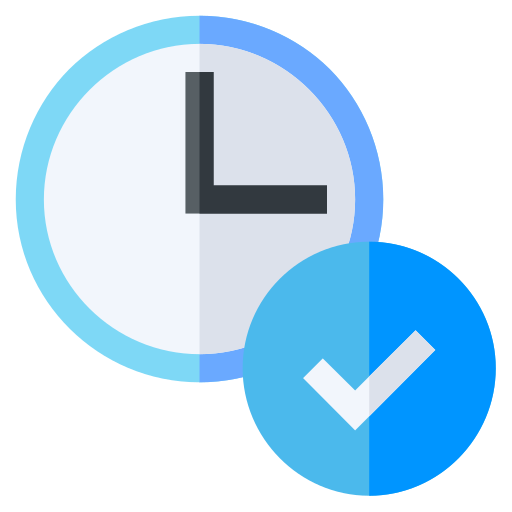

#realtime 
#messaging  #notifications
#notifications 
#notifications
Realtime messaging infrastructure.
Use Pully to manage in app messaging or notifications in realtime
or deploy the
infrastructure to your own server for your custom needs
Get Started
yarn
install
pully-client

Pully is perfect for building:
Chat Applications

Real-Time Analytics

Live Notifications
and many more...